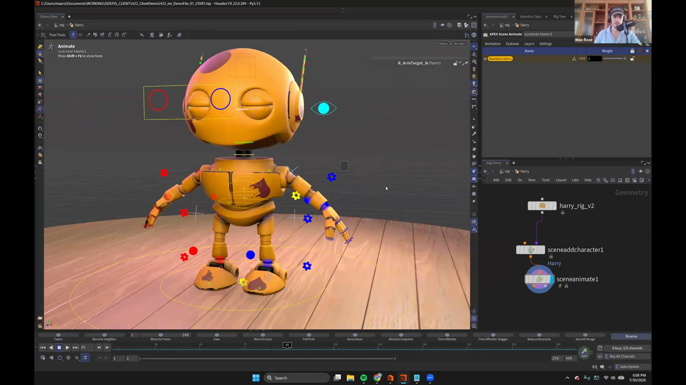
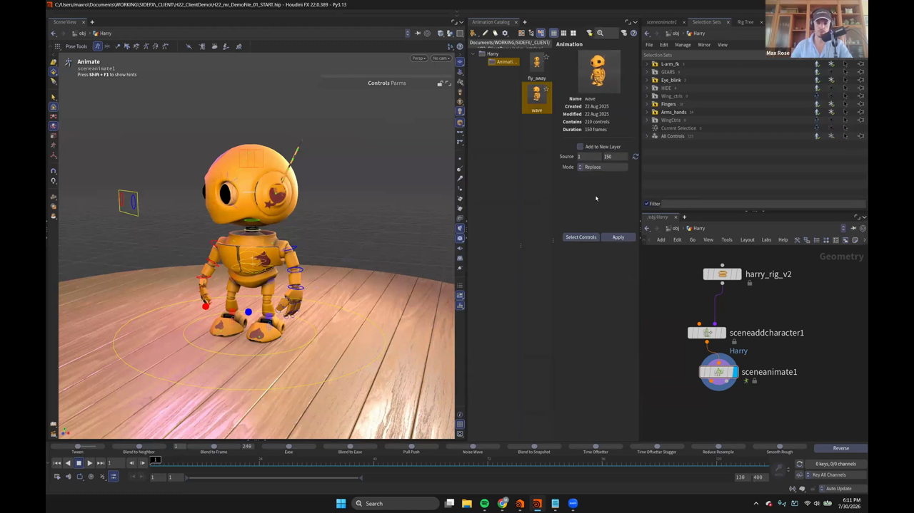
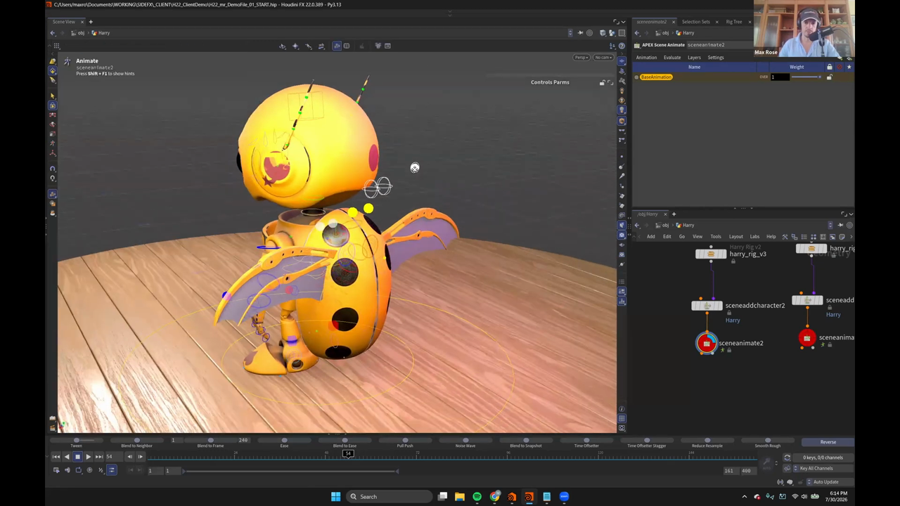

Houdini 22 KineFX アニメーション 1 — リグをノードとして扱う
出典: Animate in KineFX | Part I | Max Rose | Houdini Illume （SideFX 公式ウェビナー / 講師 Max Rose さん / Houdini FX 22.0.389 / 2026-07-30 収録 / 1:22:20 / 英語）。 このページは、上記の動画を見ながら自分用にまとめた日本語の学習メモです。SideFX 公式の翻訳ではありません。
このシリーズについて
Houdini 22 のアニメーション周りを扱う、全2回のウェビナーです。 講師は SideFX の社内スペシャリストである Max Rose さん。APEX と KineFX を長く追ってきた方だそうです。
| 回 | 内容 |
|---|---|
| Part I（この記事の元） | アニメーションの基礎、ragdoll と constraints、H22 の新ツール（secondary motion / set driven key / animation clip / Motion Mixer） |
| Part II | モーションキャプチャのリターゲット、Motion Mixer での合成、プロシージャルと手付けの組み合わせ |
APEX について、冒頭でこう説明されていました。
APEX はリグを事前コンパイルするフレームワークで、これによって動作がとても軽快になります。 ただ APEX 自体は非常に奥が深く、掘っていくとどこまでも続いてしまう領域です。 このウェビナーでは APEX の内部構造には深入りせず、実践的な内容に絞ります。
この回で扱うのは、黄色いロボットのような「Harry」というキャラクターを動かすところまでです。
1. リグはノードとして存在する

まず驚いたのが、アニメーションを始めるまでの手数の少なさです。
harry_rig_v2 → sceneaddcharacter1 → sceneanimate1- リグの HDA をネットワークに置きます（画像の
harry_rig_v2） Apex Add Characterを足して名前を付けます（ここではHarry）Scene Animateを足して、ビューポート上でEnterを押します
これだけでアニメーションステートに入ります。 リグがノードとして存在するので、ファイルを探しに行く必要がありません。 Houdini の通常のワークフローの中でそのまま完結します。
2. 操作環境を整える
アニメーションを始める前に、P キーでパラメータウィンドウを開いて
インターフェースを調整しています。ここで有効にしていたのが
use click and drag です。
これを入れると、コントロールをクリックしてそのままドラッグを始められます。 選択してから動かすという2段階が1段階になるので、素早く作業したい場面で効きます。
3. config controls で IK / FK を切り替える
Harry の体のあちこちに歯車のような形のコントロールが付いています。 これが config controls で、アニメーターがリグコンポーネントの設定を変えるためのものです。
ここでいうリグコンポーネントは、腕・脚・足・背骨・頭・首といった単位です。 それぞれが独立したコンポーネントになっていて、 AutoRig Builder で組んだリグには、これらの config controls が自動で付いてきます。 Harry も AutoRig Builder で組まれているそうです。
使い方は単純で、歯車を選んで IK と表示されているところを FK に切り替えるだけです。 講師の方は「腕は FK で付けるのが好み」ということで、両腕を FK に変更していました。
4. 選択セット — H22 でパネルが統合された

Maya で AnimBot を使って選択セットを作るのと同じことができます。
G キーでパネルが開きます。
以前のフローティングパネルを知っている方向けの補足として、 H22 ではすべてが単一のパネルに統合されました。 Layers・Settings・Bake・Constraint がひとつのウィンドウにまとまっているので、 どこに何があるか把握しやすくなっています。
作り方と読み込み
- コントロールを選んで Create set from selected で作ります。動画では
L_ARM_FKという名前を付けていました - 既存のセットは Apex Sets から一括で読み込めます（Harry Selection Sets → Replace → Accept）
上の画像の右側が実際の一覧です。用途がわかりやすいので書き出しておきます。
| セット名 | コントロール数 | 用途 |
|---|---|---|
L-arm_fk | 3 | 左腕の FK |
GEARS | 5 | config controls（歯車） |
Eye_blink | 2 | まばたき |
HIDE | 7 | リギング用のヘルパートランスフォーム。まとめて隠すため |
Wing_ctrls / WingCtrls | 6 | 翼 |
Fingers | 16 | 指 |
Arms_hands | 24 | 腕と手 |
All Controls | 120 | 全コントロール |
HIDE のようなセットの作り方が実用的だと思いました。
リギングのために必要だけれどアニメーション中は邪魔になるコントロールを1つのセットにまとめておいて、
作業開始時にまとめて隠す、という使い方です。
5. アニメーションを付ける
キーの打ち方は他のソフトと変わりません。
Ctrl+Aで全コントロールを選択Kで全部にキーを打つ。チャンネルボックスが緑になります
そこからポーズを作っていきます。講師の方が新しいキャラクターを触るときの習慣として、 「おや、そこにいたのか」という感じで振り向く動きを最初に作る、という話がありました。 キャラクターの性格が読み取りやすくなるからだそうです。
Unreal でも Maya でも 3ds Max でも、アニメーションをやってきた人なら違和感なく入れます。 リグ操作の部分は業界標準的な作りにしてあって、車輪の再発明はしていません。 （Blender は独自の流儀があるので少し違うかもしれない、という補足付きでした）
画面下のアニメーションツール群
上の画像の一番下に並んでいるボタン列が、動画中で「animation sliders」と呼ばれているものです。 中間のポーズを足したりタイミングを調整したりするのに使います。
Tweens / Blend to Neighbor / Blend to Frame / Ease /
Blend to Ease / Pull Push / Noise Wave /
Blend to Snapshot / Time Offsetter / Time Offsetter Stagger /
Reduce Resample / Smooth Rough / Reverse
動画ではこれでムービングホールドを作り、頭のタイミングを少し早めて オーバーラップを付けていました。ポーズ2つに少し手を入れるだけで、動きらしくなります。
6. Animation Catalog から既存アニメーションを流し込む
ウェビナーの尺の都合で、講師の方は事前に作ったアニメーションを流し込んでいました。 そのための仕組みが Animation Catalog です。上の画像の左半分がそれです。
サムネイル付きで一覧でき、選ぶと右側に情報が出ます。
| 項目 | 例（wave アニメーション） |
|---|---|
| Name | wave |
| Created / Modified | 22 Aug 2025 |
| Contains | 210 controls |
| Duration | 150 frames |
| Source | 1 – 150（流し込む範囲） |
| Mode | Replace |
| Add to New Layer | チェックボックス |
使い方は Select Controls でコントロールを選び、Apply を押すだけです。
動画では wave（手を振る）と fly_away（飛び去る）の2つが登録されていて、
これを繋げて1本のアニメーションにしていました。
タイムライン上で次のキーフレームに飛ぶには
Shift+← / Shift+→ が使えます。
2つ目のアニメーションを繋げる位置を探すのに使っていました。
7. HDA にリグを詰めておく

Harry のリグは HDA になっていて、中身は思ったより単純でした。
- 複数のリグを読み込む
- マテリアルを割り当てる
- 両方を
Switchノードに通して出力する
トップレベルにトグルを1つ出してあり、それを切り替えると リグそのものが差し替わります。 上の画像では翼が付いたバージョンに切り替わっています。
アニメーションデータは1ノードに乗る
ここが Houdini らしいところでした。
アニメーションのデータはすべて Scene Animate ノード1つに乗っています。
つまりノードごとコピーすれば、アニメーションの別バージョンがそのまま手に入ります。
動画では「監督が翼をやめてほしいと言った」という想定で、 ノードをコピーして3つ目のバージョンを作り、そこから作業を続けていました。 ファイルを別名保存してイテレーションを増やす必要がありません。
赤い丸ノードにしておく
細かい話ですが、真似したくなった工夫です。
講師の方は Scene Animate ノードを赤くして丸い形に変えるそうです。
ネットワークビューにノードがたくさんあるとき、ズームアウトしても アニメーションのノードがどこにあるかすぐわかるようにするためです。
上の画像でも、2つの sceneanimate が赤い丸になっています。
発想としての使い方
HDA なので、もっと広い使い方もできると話されていました。 マテリアルを変える、キャラクターを変える、あるいは キャラクターパイプライン全体をひとつのマスター HDA に入れておいて、 トグルでキャラクターを選び、順に取り出してシーンに並べる——といった具合です。
8. 抽象コントロールにスライダーが付いた
HDA の中には抽象的なコントロール（体の一部ではない、値を操作するためのコントロール）があります。 H22 ではこれにスライダーが付きました。
以前はスライダーが無く、float 値が今どこにあるのか見えませんでした。 GUI が付いたことで、リグ内の float 値に繋いでそのままアニメーションできます。
この回のまとめ
- リグはノードとして置けるので、
Apex Add Character→Scene Animate→Enterだけでアニメーションを始められます Pキーの use click and drag で、クリックからそのままドラッグできます- 歯車型の config controls で IK / FK を切り替えます。AutoRig Builder で組めば自動で付いてきます
Gキーの選択セットパネルは H22 で単一パネルに統合されましたHIDEのようなセットを作って、作業の邪魔になるコントロールをまとめて隠せます- Animation Catalog から既存アニメーションをコントロール単位で流し込めます
- アニメーションデータは
Scene Animate1ノードに乗るので、ノードのコピーがバージョン管理になります
次は Ragdoll と Shot Sculpt で、キャラクターに乱暴な退場をしてもらいます。